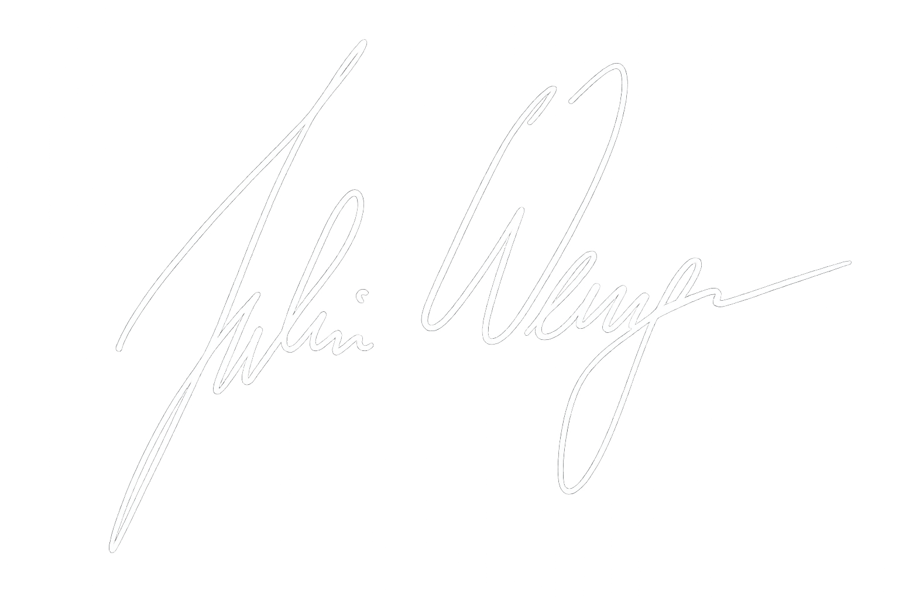

LEAN Construction für Infrastrukturprojekte
Ich bin Julian Wenger und positioniere mich mit just LEAN it auf LEAN Construction, Prozessoptimierung und Change Management im Bau- und Infrastrukturumfeld.

„Mit LEAN Construction die Wertschöpfung in Ihrem Infrastrukturprojekt gezielt erhöhen.“

Klare Abläufe. Weniger Verschwendung. Bessere Projekte.
Ich verbinde technisches Verständnis aus dem Infrastruktur- und Tunnelbau mit fundierter Ausbildung in Projekt-, Prozess- und Change Management.
Mit LEAN Construction und Baulogistik kontinuierlich Bauabläufe beschleunigen.
Ich bin Julian Wenger – LEAN Manager, Bauingenieur, Change Manager und Fachexperte im Tunnelbau- und Ingenieurtiefbau. Mein Ziel ist es, Bauprojekte effizienter, wertschöpfender und nachhaltiger zu gestalten.
Meine erste intensive berufliche Erfahrung mit der LEAN-Philosophie machte ich 2019 im Rahmen des North Yorkshire Polyhalite Project in Großbritannien. Seitdem verfolge ich mit Leidenschaft das Ziel, komplexe Bauvorhaben durch strukturierte Abläufe, bessere Zusammenarbeit und praxisnahe Prozessoptimierung wirksam zu verbessern.
Heute unterstütze ich die PORR Group aktiv bei der LEAN-Transformation und begleite Projekte in unterschiedlichen Bereichen, darunter Tunnelbau, Tiefbau, Hochbau, Revitalisierung und Planung.
Mein Ziel: Bauprojekte effizienter und nachhaltiger zu gestalten – für eine zukunftsorientierte Bauindustrie.
Wobei ich unterstützen kann
Die folgenden Themen bilden die Grundlage meiner Positionierung im Bereich LEAN Construction für Infrastrukturprojekte.
LEAN Construction
Einführung, Weiterentwicklung und praxisnahe Anwendung von LEAN-Prinzipien im Bau- und Infrastrukturumfeld.
Prozessoptimierung
Analyse bestehender Abläufe, Identifikation von Engpässen und Entwicklung klarer, robuster Prozessstrukturen.
Change Management
Begleitung von Veränderungsprozessen mit Fokus auf Akzeptanz, Kommunikation und nachhaltige Umsetzung.
Projektnahe Umsetzung
Lösungen mit technischem Verständnis, operativem Praxisbezug und klarem Blick auf reale Projektbedingungen.
Methoden, die auf Baustellen Wirkung erzeugen
Referenzen und konkrete Projektbeispiele aus unterschiedlichen Bau- und Infrastrukturprojekten.
Last Planner System
- LHS300 (Graz) – Industriebau
- Muthgasse 105 (Wien) – Hochbau
- Leopoldquartier (Wien) – Hochbau
- RISE Siemens (St. Ruprecht) – Industriebau
- ARIO Klinik Favoriten (Wien) – Revitalisierung
- An der Schanze (Wien) – Hochbau
- Hotel Bristol (Wien) – Revitalisierung
- Luegbrücke (Gries) – Ingenieurbau
- Pumpspeicherkraftwerk Forbach (Forbach, D) – Tunnelbau
- 3SI Rotenlöwengasse (Wien) – Revitalisierung
- Klimatunnel Linz (Linz) – Microtunnelling
Shopfloor Management
- PORR Tiefbau Wien (Wien) – div. Baustellen
- Tunnelkette Pack (Edelschrott) – Tunnelbau
- Pumpspeicherkraftwerk Forbach (Forbach, D) – Tunnelbau
- Klimatunnel Linz (Linz) – Microtunnelling
- Regelkommunikationskaskade PORR Tunnelbau (Wien) – Tunnelbau
- Brenner Basistunnel H53 (Steinach a. Brenner) – Tunnelbau
Wertstromanalyse
- Brenner Basistunnel H53 (Steinach a. Brenner) – Tunnelbau, Tübbinglogistik
KVP-Projekte
- North Yorkshire Polyhalite Project (Redcar, UK) – Tunnelbau, Reduktion TBM Bohrkopfverstopfung
- Brenner Basistunnel H53 (Steinach a. Brenner) – Tunnelbau, Tübbinglogistik Störungsticker
- Sibiu-Pitesti Lot 4 (RO) – Tunnelbau, Optimierung Anschlussfugenqualität SpC
- Aufbau LEAN Expertenforum Tunnelbau (Wien) – Tunnelbau, LEAN Experten-Netzwerk
LEAN Quick Check
Schnelle Standortbestimmung zur Identifikation von Potenzialen und konkreten Maßnahmen.
LEAN-Ausbildungen
- LEAN Basis Ausbildung (Ganztag)
- LEAN Poliertraining (Halbtag)
- LEAN Expertenausbildung (5 Module)
- LEAN Leader Ausbildung (5 Module)
Technische Basis. LEAN Fokus. Veränderungskompetenz.
Akademische Ausbildung
- CAS in Change Management & Innovation, Lunex University
- MBA in Projekt- & Prozessmanagement, Hochschule Burgenland
- MSc in Geotechnical and Hydraulic Engineering, TU Graz
- BSc in Bauingenieurwesen & Wirtschaftsingenieurwesen, TU Graz
- Auslandssemester in Geotechnical Engineering, NTUST
- HTL-Matura in Maschinenbau & Anlagentechnik, HTL Vöcklabruck
LEAN & Prozessoptimierung
- LEAN Construction Expertenausbildung nach VDI 2553
- LEAN Six Sigma Black Belt
- LEAN Six Sigma Green Belt
Change, Leadership & Digitalisierung
- Change Management Grundlagen
- Digital Leadership – Führen in digitalen Zeiten
Kommunikation & Leadership Skills
- Kommunikationsseminar & Business Coaching
- Gezielt kommunizieren, erfolgreich agieren
- Konfliktvermeidung und -lösung
- Lösungsorientierte Verhandlungsführung
- Moderne Business Präsentation & Rhetorik
Weitere Fachausbildungen
- Sicherheitsvertrauensperson (SVP)
- Nachwuchsingenieurprogramm Tunnelbau
- Pflichten des Bauleiters (ÖBV Fachseminar)
- Sprengbefugnis „Allgemeine Sprengarbeiten“
- Sprengbefugnis „Tiefbohrlochsprengarbeiten“
Sprachen
- Deutsch
- Englisch
Praxis aus Bau, Infrastruktur und LEAN Construction
PORR Group
- LEAN Business Partner
- Senior LEAN Construction Manager
- LEAN Construction Manager
STRABAG AG
- LEAN Construction Experte
- Contract Manager (Tunnelbau)
- Tunnel Schichtbauleiter
- Bautechniker Bauleitung & Arbeitsvorbereitung
- Bautechniker Technischer Innendienst / Angebotsbearbeitung
- Abrechnungstechniker (Ingenieurtiefbau)
Operative Projekterfahrung
- Koralmtunnel Baulos KAT2 (Ö): Bautechniker
- S3C3 Link Sewers for DTSS2 (SG): Bautechniker
- North Yorkshire Polyhalite Project (GB): Tunnel Schichtbauleiter
- Stadtstraße Aspern (Ö): Abrechnungstechniker
Weitere praktische Erfahrung
Praktika in Sondermaschinenbau, Hochbau, Tiefbau, Fassadenbau und Tunnelbau.
Anerkennung für technische und wissenschaftliche Arbeit
Arbeiterkammer Wissenschaftspreis 2022
Verliehen von der Arbeiterkammer Oberösterreich
Thema: Influence of COVID-19 on a major construction site (UK)
ÖGG Förderpreis 2018
Verliehen von der Austrian Society of Geomechanics
Thema: Optimisation of Connecting Elements for Shotcrete Linings
Lass uns ins Gespräch kommen
Für Austausch, erste Gespräche oder zukünftige Zusammenarbeit im Bereich LEAN Construction für Infrastrukturprojekte.